비서-2급 (2013-05-26 기출문제)
1과목: 비서실무
1. 김 팀장은 홍 비서에게 “홍상이씨, 오늘 3시 영업회의를 소집해줘. 참석자는 영업팀 김과장, 이대리, 김준수씨, 이청아씨야. 연락 좀 해줘요.”라고 지시했다. 이 지시를 받는 홍 비서의 대응 방법으로써 가장 적절하지 않은 것은?
- “오늘 오후 3시 회의 참석대상자는 팀장님 포함 모두 5명 맞지요?”
- “팀장님, 영업팀에는 이대리가 2명이 있는데 회의 참석자는 이철구 대리와 이호섭 대리 중 누구인지요?”
- “예, 신속히 전달하도록 하겠습니다.”
- “현재 김과장께서는 외부 회의 참석 중이시라 3시까지 사무실로 들어오기가 어려울 것 같습니다.”
(정답률: 50%)

2. 다음 중 전화응대법으로 가장 적절치 않은 것은?
- 거래처의 사장 비서에게 전화가 왔는데 통화 중 전화가 끊어져 발신자인 거래처 비서가 전화를 다시 걸었다.
- 거래처에서 온 전화 용건을 받은 비서는 제대로 이해하였는지를 확인하고자 복창을 하였다.
- 거래처 임원과 내 상사를 연결할 경우 직위에 상관없이 상사를 먼저 전화 연결하여 외부 고객을 맞이하도록 한다.
- 전화통화 시 내용과 관련된 자료를 미리 준비하여 확인하며 통화하도록 한다.
(정답률: 74%)
3. 비서 박장호는 강연과 집필활동을 활발히 하는 상사 및 회사의 홍보업무도 담당하고 있다. 상사가 새로 집필한 신간서적의 홍보업무를 확대하기 위한 아이디어로 가장 부적절한 것은?
- 상사의 프로필과 신간서적의 내용을 요약하여 신문사에 팩스 전송 및 기사화를 요청한다.
- 신간서적을 출간하는 출판사의 홍보 담당자와의 유기적 협의를 통하여 전문가의 조언을 참고하여 진행한다.
- 회사 홈페이지의 게시판을 통하여 임직원들에게 알리고 공유한다.
- 박장호 개인의 블로그에 출간일정을 올리고 지인들에게 전한다.
(정답률: 55%)
4. 세진기업 강민경 비서가 상사에게 업무 보고를 하고자 할때, 다음 중 가장 적절치 않은 것은?
- 거래처에 임원과의 면담으로 외근 중이신 상사에게 급한 보고사항이 있어 거래처 비서에게 연락하여 메모를 남기었다.
- 오찬약속으로 외부에 계신 상사에게 급하게 보고할 내용이 있어 이동 중인 시간에 휴대전화로 보고 드렸다.
- 한 달 뒤에 개최될 협력사 초청 워크샵의 진행상황은 중간보고를 통해서 경과를 보고하였다.
- 보고서로 작성해서 올려야 할 사안이 생겼을 때에는 긴급한 내용이더라도 보고서로 작성이 끝난 후 보고 드린다.
(정답률: 74%)
5. 양비서는 상사 개인의 일상적 금융관리도 책임지고 있다. 양비서의 업무 처리 방법으로 가장 옳지 않은 것은?
- 상사의 신용카드 매출전표는 청구서가 오더라도 일정기간 폐기하지 않고 보관한다.
- 매달 정기적으로 지출되는 돈은 자동이체를 신청한다.
- 상사의 판공비 관리업무는 양비서가 처리하고 판공비에 대한 상세 회계처리는 경리부나 회계부에서 처리하도록 요청하였다.
- 상사의 통장과 도장은 기밀장소에 보관하고, 현금은 필요할 때마다 찾았다.
(정답률: 59%)
6. 프랑스인 대표이사가 비서 권은아씨와 임원 8명을 본인의 집에서 여는 저녁파티에 초대하였다. 이 때 비서의 행동으로 가장 적절하지 않은 것은?
- 초대를 받았을 때, 감사하다는 표현과 함께 자신이 준비하거나 도와줄 것이 없는지 물어보았다.
- 선물은 가장 무난한 빨간색 장미와 향수로 준비하였다.
- 대표이사 댁에 약 5분∼10분 전에 도착하였다.
- 식사를 하는 동안 대표이사 부부의 관심사를 살펴 공통화제로 대화를 계속하였다.
(정답률: 63%)
7. 상사가 뉴욕으로 출장을 가게 되었다. 이때 비서의 업무태도로 바람직하지 않은 것은?
- 대도시에는 공항이 2개 이상인 경우가 있으므로 갈아타는 경우 동일한 공항에서 갈아탈 수 있는 비행기를 예약하도록 한다.
- 회사의 여비규정을 확인하여 상사의 직급에 맞는 교통수단과 등급으로 예약한다.
- 상사가 희망하는 항공편의 좌석이 없는 관계로 즉시 다른 항공편으로 예약하였다.
- 예약 시 항공일정을 재확인하여 예약 받는 사람, 전화번호, 예약번호를 받아놓았다.
(정답률: 53%)
8. 상사의 지시를 받는 이 비서의 태도로 가장 적절한 것은?
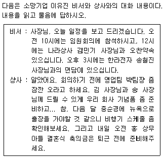
- 일정을 보고하러 들어갈 때에는 일정표만 가지고 들어가고, 혹시 메모할 사항이 생기면 상사 책상 위의 메모지를 활용하도록 한다.
- 회사 기념품의 종류를 어떤 것으로 할지는 비서가 적당한 것으로 고르면 되므로, 다시 확인하지 않아도 된다.
- “다음 달 중순 언제로 비행기 스케줄을 알아볼까요?”라고 궁금한 점이 있는 경우 지시 도중 질문을 한다.
- 지시사항을 모두 메모한 뒤 간단히 복창하여 확인한다.
(정답률: 68%)
9. 다소 성격이 급한 다혈질 상사에 맞추어 일을 하기 위한 비서의 노력으로 가장 적절한 것은?
- 상사 출근 전에 당일 신문의 주요 기사를 미리 보실 수 있도록 스크랩을 해서 책상 위에 올려둔다.
- 지시 사항의 결과를 빨리 알고 싶어 하는 상사를 위해 비서는 완벽하게 일 처리할 때까지 기다리기 보다는 중 간보고를 수시로 한다.
- 상사가 비서의 잘못으로 오해하여 화를 낸 경우, 그 자리에서 상황을 자세하게 설명하여 바로 오해를 풀도록한다.
- 위의 지시사항에 대한 보고를 할 때는 경과나 이유를 자세하게 설명한 후 결론 또는 결과를 말한다.
(정답률: 50%)
10. 위의 지시사항을 받은 후 한지원 비서가 처리해야 할 업무의 우선순위를 나열한 것으로 가장 적절한 것은?(10번 공통지문 문제)
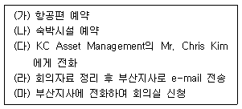
- (가) - (나) - (다) - (라) - (마)
- (마) - (가) - (나) - (다) - (라)
- (가) - (나) - (마) - (다) - (라)
- (다) - (가) - (나) - (라) - (마)
(정답률: 58%)
11. 한지원 비서가 KC Asset Management의 Mr. Chris Kim에 게 전화하여 약속을 변경하고자 하였으나, 외근 중이어서 자동응답메시지가 나왔다. 한 비서의 업무 처리 방법으로 가장 적절한 것은?(10번 공통지문 문제)
- 자동응답기에 내일 오전 약속을 변경하고자 한다는 메시지와 함께 죄송하다는 메시지를 남기고 끊었다.
- Mr. Chris Kim의 휴대전화로 문자 메시지를 보냈다.
- 자동응답기에 약속 변경에 관한 메시지를 남긴 후 오후에 다시 전화 드리겠다는 메시지를 함께 남겼다.
- 자동응답기에 약속 변경에 관한 메시지를 남기고, 메시지를 들은 후 전화해 줄 것을 요청하는 메시지를 함께 남겼다.
(정답률: 41%)
12. 비서에게 필요한 역량을 설명한 것 중 가장 올바른 것은?
- 비서실 내 체계화되어 있지 않은 파일링의 효과적 방안을 강구한다.
- 정형화되어 있는 일이 대부분이므로 순간적인 판단이나 융통성을 발휘하는 것 보다는 궤도에서 벗어나지 않게 일처리를 하는 것이 더 중요하다.
- 업무를 처리하는 데에는 우리의 문화나 규범을 따라서 그에 맞는 업무기준을 세우도록 한다.
- 상사에 대한 충성심이 회사 조직 규율 순응보다 우선 시되어야 한다.
(정답률: 20%)
13. 각 상황에 대한 비서의 자세로서 가장 바람직한 것은?
- 총무과장에게 상사의 업무지시를 전달하기 위하여 “이 서류를 지금 바로 만들어 주세요. 사장님이 급하신 모양입니다.”라며 총무과장에게 업무이행요청을 하였다.
- 사내 다양한 인맥을 유지하기 위하여 타부서 사람들과 친해진 뒤 상사와의 관계발전을 위해 타부서 사람들에게 자주 조언을 구하게 되었다.
- 동료 비서가 매우 바빠 보이지만 상사의 업무지시를 대기하여야 하므로 선뜻 업무지원에 나서서는 안 된다.
- 입사동기가 급하게 금전 도움을 요청하였지만 적절한 사유를 들어 조심스레 거절을 하였다.
(정답률: 46%)
14. 두 명의 상사를 동시에 보좌하게 된 정윤희씨의 시간관리방법으로 바람직하지 않은 것은?(15번 공통지문 문제)
- 전무와 상무의 중요도와 긴급도가 다를 수 있으므로 우선순위를 물어보도록 한다.
- 업무가 많을 경우, 긴급하지만 중요도가 떨어지는 업무는 동료에게 도움을 요청한다.
- 정윤희씨 상사인 상무의 업무보좌를 중심으로 전무 보좌업무를 수행한다.
- 상사의 업무 계획에 따라 비서의 업무 계획을 조정한다.
(정답률: 50%)
15. 다음 중 김비서가 작성한 회의록에 기재되지 않아도 되는 사항은?(17번 공통지문 문제)
- 참석자의 출결사항과 결석 시 대리자 성명
- 회의 일시, 장소
- 회의록 배포 대상
- 발언자 성명 및 발언 내용
(정답률: 48%)
16. 다음은 진행 중인 컨설팅 업무로 고객사에서 면담 요청이 들어와 비서가 면담일정을 잡는 대화내용이다. 밑줄에 해당하는 비서의 응대법으로 가장 적절한 것은?
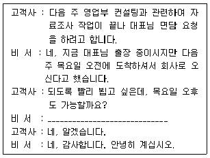
- 고객사를 배려하여 최대한 빨리 목요일 오후로 면담을 잡는다.
- 상사가 출장 중이므로 즉시 연락을 취해 일정을 잡는다.
- 출장 직후에 면담을 잡으면 일정에 무리가 있으니 고객사와 상사의 사정을 모두 고려하여 일정을 잡도록 한다.
- 상사가 출장 중이므로 비서가 재량으로 일정을 잡는다.
(정답률: 64%)
17. 다음의 대화 내용 중 밑줄 친 단어의 한자 표기로 잘못된 것은?
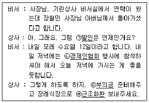
- ㉠ 발인(發靷)
- ㉡ 경제인협회(經濟人協會)
- ㉢ 부의금(賻儀金)
- ㉣ 근조화환(謹弔花患)
(정답률: 48%)
2과목: 경영일반
18. 다음 중 기업 환경에 대한 설명으로 가장 옳지 않은 것은?
- 기업의 일반환경이란 기업과 매우 밀접한 관련을 가지면서 기업활동에 직접적 영향을 미치는 근접환경을 의미한다.
- 기업의 과업환경은 기업경영활동으로 인해 직·간접적 이득이나 손해를 보는 이해관계자들로 분류된다.
- 상황의 변화에 따라 기업 일반환경의 일부가 과업환경으로 변화하기도 한다.
- 환경은 기업에게 사업의 기회를 제공해주는 한편 기업활동에 위협이 되기도 한다.
(정답률: 22%)
19. 다음 중 글로벌 기업경영에 대한 설명으로 가장 적절하지 않은 것은?
- 글로벌 기업의 목표는 단순한 이윤 극대화를 넘어서 시장의 확대 및 유지에 있다.
- 글로벌 경제원리는 자유로운 세계투자를 보장하는 자유무역주의나 보호무역주의와 관련하며 국가단위의 단일경제체제를 지향하고 있다.
- 국내기업이 국제기업 또는 다국적 기업으로 발전하며 글로벌 경제화가 진전됨에 따라 글로벌 기업이 등장하게 된다.
- 최근 많은 기업이 전세계 시장에 대응하기 위한 표준화된 제도 및 마케팅 방법을 사용하는 글로벌 전략을 채택하고 있다.
(정답률: 71%)
20. 다음의 벤처기업의 성장단계에 따른 위기 요인 중 가장 적절하지 않은 것은?
- 창업준비단계 - 계획의 실현가능성
- 사업개시단계 - 창업자의 능력 부족
- 초기 성장단계 - 권한 위양 및 조직내 갈등
- 후기 성장단계 - 조직구조 확대에 따른 여러 가지 문제
(정답률: 25%)
21. 기업에서 조직구성원의 모티베이션을 향상시키기 위해 직무충실화라는 직무재설계 접근법을 적용하고 있다. 이에 대한 근거가 되는 동기부여이론으로 가장 적합한 것은?
- 하우스의 경로 - 목표이론
- 브룸의 기대이론
- 허즈버그의 2요인이론
- 맥클리랜드의 성취동기이론
(정답률: 23%)
22. 다음은 기업의 재무 상태를 파악하기 위한 재무비율과 그 판단대상을 설명한 것인데, 이 중 가장 적절하지 않은 것은?
- 유동성 비율 - 채무자의 단기 지급능력
- 레버리지 비율 - 생산활동의 인적·물적 자원의 능률
- 활동성 비율 - 기업 자산의 물리적 이용도
- 수익성 비율 - 기업의 수익창출 능력
(정답률: 38%)
23. 국가가 경영하던 국영기업체의 소유권을 업무의 효율성 제고와 생산성 향상을 위해 민간 부문으로 이전하는 것을 무엇이라 하는가?
- 민영화
- 국유화
- 계열화
- 국영화
(정답률: 65%)
24. 다음 중 기업의 인수 및 합병에 관한 설명으로 가장 적절하지 않은 것은?
- M&A는 외부경영자원 활용의 한 방법으로 기업의 인수와 합병을 의미한다.
- 우호적 합병은 상대기업의 이사진이 인수제의를 거부하고 방어행위에 돌입하는 경우 사전에 수립된 인수전략에 따라 인수작업에 착수한다.
- 수평적 합병은 동일 산업에서 생산활동 단계가 비슷한 기업 간에 이루어지는 경우를 말하며 시장점유율을 높이거나 판매력 강화 또는 생산 및 판매를 일원화하기 위해 이루어지는 것이다.
- 수직적 합병은 한 기업의 생산과정이나 판매경로 상에서 이전 또는 이후의 단계에 있는 기업을 인수하는 것으로 주로 일관된 생산체제 또는 종합화 등을 목적으로 할 때 나타난다.
(정답률: 40%)
25. 다음 중 커뮤니케이션의 기법으로 가장 적절하지 않은 것은?
- 고충처리제도
- 제안제도
- 브레인스토밍
- 상담제도
(정답률: 48%)
26. 정보시스템의 유형과 기능에 대한 아래 설명 중 가장 옳지 않은 것은?
- 거래처리시스템(TPS : transaction processing system): 거래 처리를 통해 발생되는 데이터를 획득하고 저장
- 경영정보시스템(MIS : management informatio nsystem) : 경영관리에 필요한 정보를 제공
- 중역정보시스템(EIS : executive information system): 최고경영자의 전략기획 업무를 지원
- 전략정보시스템(SIS : strategic information system): 통계적 기법을 통해 의사결정 대안들을 비교하여 의사 결정에 필요한 정보를 제공
(정답률: 27%)
27. 다음 중 기업의 사회적 책임에 대한 설명으로 가장 적절하지 않은 것은?
- 기업은 경영활동에 관련된 의사결정이 특정 개인이나 사회 전반에 미칠 수 있는 영향을 고려해야 하는 의무가 있는데, 이를 기업의 사회적 책임이라고 한다.
- 기업이 사회적 책임을 이행하면 사회 또는 고객으로부터 두터운 신뢰와 좋은 평판을 얻게 되어 매출에 긍정적으로 작용할 수 있는 이점이 있다.
- 기업의 사회적 책임에는 기업의 유지 및 발전에 대한 책임, 환경에 대한 책임, 공정경쟁의 책임, 지역사회에 대한 책임 등이 포함된다.
- 기업은 최대이윤을 확보함으로써 기업을 유지·발전시켜야 하는 책임이 있다.
(정답률: 57%)
28. 다음 중 경기변동 관련 용어에 대한 설명으로 가장 옳지 않은 것은?
- 슬럼프플레이션 - 경기가 후퇴하는 가운데 일어나는 급격한 물가 하락 현상
- 애그플레이션 - 농산물 가격이 상승함에 따라 물가가 상승하는 현상
- 스태그플레이션 - 경기가 침체되어 수요가 감소함에도 오히려 물가가 상승하는 현상
- 비용인플레이션 - 원자재 가격이나 임금이 상승하여 물가가 상승하는 현상
(정답률: 30%)
29. 인터넷을 통하여 개인의 지식 및 전문기술을 판매하는 경우나, 경매 사이트에서 개인 물건을 경매에 부치는 경우는 다음 중 어떤 유형의 전자상거래에 해당 되는가?
- B2B(business to business)
- B2C(business to consumer)
- G2C(government to consumer)
- C2C(consumer to consumer)
(정답률: 45%)
30. 다음의 사업부제조직에 관한 설명 중 가장 적절하지 않은 것은?
- 제품, 고객 또는 지역에 따라 사업부로 나뉘어져 운영되는 집권적 구조이다.
- 경영자의 훈련과 개발에 효과적이며, 위험의 분산에 효과적인 조직구조이다.
- 사업부제조직은 독립채산성을 높일 수 있다.
- 사업부제조직의 단점은 사업활동에 따른 자원과 부서가 중복됨에 따라 운영비용이 증대된다는 점이다.
(정답률: 15%)
31. 자금을 빌려줄 때 적용하는 금리로 국제금융거래에서 기준금리 역할을 하는 금리를 말하며, 자금을 차입하는 국가나 기업의 신용상태에 따라 이 금리에 차등금리를 가산하여 실제 적용금리를 정한다. 이 금리는 무엇인가?
- 리보(LIBOR)금리
- 가산금리
- CD금리
- 금리스왑
(정답률: 50%)
32. 다음 중 인사고과상 오류에 대한 설명으로 가장 거리가 먼 것은?
- 관대화 경향은 정규분포곡선의 이용을 통해 더욱 심해진다.
- 중심화 경향을 해소하기 위해 강제할당법과 서열법을 활용할 수 있다.
- 시간적 오류는 평가센터를 상시 운용함으로써 피할 수 있다.
- 대비오류는 고과자가 자신이 지닌 특성과 비교하여 피고 과자를 평가하는 경향이다.
(정답률: 19%)
33. BCG 매트릭스에 따르면 기대시장성장률이 낮고 시장점유율이 높은 사업은 다음 중 어느 부문에 해당하는가?
- Stars
- Question Marks
- Cash Cows
- Dogs
(정답률: 65%)
34. 다음 중 특정 산업 내 높은 경쟁강도를 가져올 수 있는 기업의 외부환경으로 가장 적절하지 않은 것은?
- 산업성장률이 높은 경우
- 진입장벽이 낮은 경우
- 신규대체재의 출현 가능성이 높은 경우
- 시장 점유율이 비슷한 경우
(정답률: 43%)
35. 다음 중 기업의 다양한 형태에 대한 설명으로 가장 바람직하지 않은 것은?
- 합명회사는 각 사원이 회사의 채무에 대해 연대하여 책임을 진다는 점에서 대외신용력이 높다는 장점이 있다.
- 유한회사는 소수의 사원과 소수의 자본으로 운영되므로 중소규모의 기업경영에 주로 이용된다.
- 합자회사의 유한책임사원은 출자는 물론 경영을 담당하고 무한책임사원은 재산출자만을 할 수 있다.
- 합자회사는 합명회사에 비해 자본조달이 용이한 장점이 있으나 지분양도가 어려워 대기업으로 성장하는데 한계가 있다.
(정답률: 53%)
36. 다음의 TQM(Total Quality Management)에 관한 설명 중에서 가장 적절하지 않은 것은?
- TQM은 품질을 생산라인에만 관련되는 개념으로 파악하던 기존의 개념에서 벗어나, 모든 사람의 모든 업무에 적용되어 제품생산뿐만 아니라 관리업무나 서비스 등에 적용되는 개념으로 '고객의 욕구와 합리적인 기대를 충족시켜 주는 활동'이다.
- TQM은 고객지향, 지속적 개선, 종업원 참여를 강조하는 개념이다.
- TQM은 품질개선을 위한 단순한 기법 차원을 넘어 기업전체의 경쟁력을 향상시키기 위한 철학이라 할 수 있다.
- TQM은 품질관리부서 최고책임자의 강력한 리더십에 의해 추진되는 단기적 품질혁신 프로그램이다.
(정답률: 55%)
37. 다음 중 경영의 특성을 설명한 것으로 가장 적절하지 않은 것은?
- 경영은 연속성과 순환성을 갖는 프로세스이다.
- 경영은 서로 다른 사람들이 조직 내에서 공동의 목적 달성을 위해 하는 활동들을 포함한다.
- 경영은 환경변화를 예측하고 적응해 가는 활동들을 포함한다.
- 경영은 무한한 자원을 바탕으로 이익의 극대화를 추구한다.
(정답률: 72%)
3과목: 사무영어
38. Which of the following is the most appropriate expression for the blank?
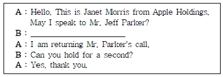
- May I ask who is calling?
- What can I do for you?
- May I ask what you're calling for?
- Can I tell him why you're calling?
(정답률: 50%)
39. Which of the following is the most appropriate word for the blank?
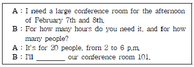
- visit
- cancel
- arrange
- handle
(정답률: 62%)
40. Choose the one which does NOT explain the meaning correctly.
- sales clerk – someone who sells things in a shop
- customer – a person who buys goods or services from a shop
- producer – a person or company that makes or grows goods, foods or materials
- employee – a person who runs his or her business and hires someone for the business
(정답률: 71%)
41. Which of the following is the best arrangement of a business letter?
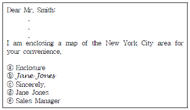
- ⓒ → ⓑ → ⓔ → ⓓ → ⓐ
- ⓒ → ⓑ → ⓓ → ⓔ → ⓐ
- ⓒ → ⓓ → ⓑ → ⓔ → ⓐ
- ⓒ → ⓓ → ⓔ → ⓑ → ⓐ
(정답률: 48%)
42. Which of the following is the least appropriate expression for the blank?
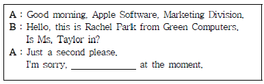
- she's expecting you
- she's talking on another line
- she's not her desk
- she's in a meeting
(정답률: 40%)
43. According to the e-mail message from the boss, which of the following is NOT true?
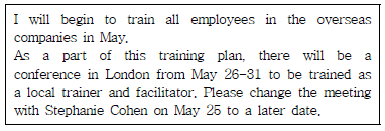
- The conference is a part of the training planned.
- The training for all employees in the overseas companies will begin in May.
- The conference schedule should be postponed.
- The appointment with Stephanie Cohen should be changed.
(정답률: 53%)
44. Choose the most appropriate sentence for the blank in the following conversation.
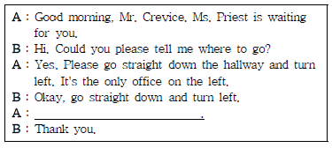
- I'll give her the message.
- Let me check if she is available at the moment.
- That's right.
- No, go straight down the hallway and turn to the right.
(정답률: 36%)
45. Choose the one that writes inside address in correct order.
- The Fairmont Hotel
867 Mason Street
Mr. Jack O'Brian, Director
San Francisco, California 906412 - Mr. Jack O'Brian, Director
867 Mason Street
The Fairmont Hotel
San Francisco, California 906412 - Mr. Jack O'Brian, Director
The Fairmont Hotel
867 Mason Street
San Francisco, California 906412 - San Francisco, California 906412
The Fairmont Hotel
867 Mason Street
Mr. Jack O'Brian, Director
(정답률: 53%)
46. Which of the following is the least appropriate expression for the blank ⓐ?
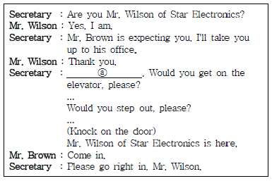
- You're welcome.
- Don't mention it
- That's very kind of you.
- It's my pleasure.
(정답률: 22%)
47. Choose the most effective subject line that reflects the following e-mail message.
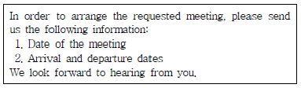
- Meeting agenda.
- Following the direction.
- The venue of the meeting.
- Requesting information for the meeting.
(정답률: 44%)
48. According to the following dialogue, why isn't Mr. Adams able to meet Ms. Garner now?
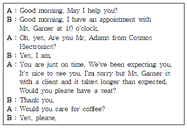
- Mr. Adams didn't make an appointment in advance.
- Mr. Adams was late for the meeting with Ms. Garner.
- Ms. Garner forgot the appointment with Mr. Adams.
- Ms. Garner is in a meeting with her client.
(정답률: 30%)
49. According to the conversation below, which of the following is true?
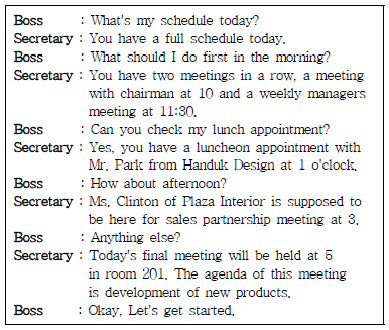
- The boss is going to visit Ms. Clinton's office at 3.
- The boss will have four meetings and a lunch appointment today.
- The boss will have lunch together with chairman at 1.
- The boss has a meeting with managers every morning.
(정답률: 37%)
50. What is the purpose of the following passage?
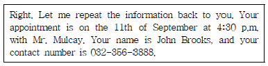
- To make a call.
- To leave a message.
- To confirm the information.
- To request the information.
(정답률: 41%)
51. According to the following voice message, which statement is NOT true?
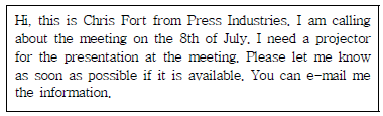
- A meeting has been scheduled on July 8.
- A projector is needed for the meeting.
- Write an e-mail in response to the voice message.
- Chris Fort is unable to attend the meeting.
(정답률: 60%)
52. Choose the most appropriate sentence for the blank in the following conversation.
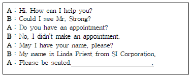
- He's not in today.
- Let me see if Mr. Strong is available at the moment.
- Let me put you through to Mr. Strong.
- I'll make sure Mr. Strong receives your message.
(정답률: 37%)
53. Choose the one which has a spelling mistake.
- I calcurated the cost of the material per kilogram.
- Sam does all the bookkeeping for our business.
- The towels we found on sales were a bargain.
- Mark is a buyer for a large clothing retailer.
(정답률: 19%)
54. Choose the most appropriate one for the blank ⓐ.
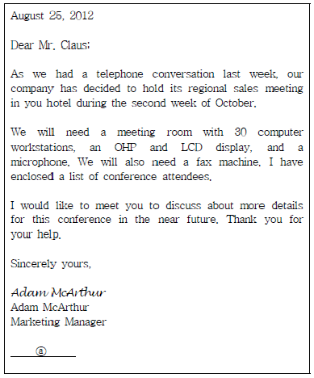
- CC
- August 25, 2012
- PS
- Enclosure
(정답률: 50%)
55. According to the following itinerary, what is Mr. Edward going to do on Tuesday?
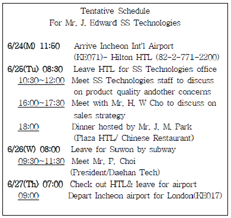
- He is going to meet with Mr. J. M. Park to discuss on sales strategy together.
- He is going to meet Mr. P. Choi to discuss on product quality and other concerns.
- He is going to meet SS staff in the office to discuss on several things.
- He is going to check out the hotel to leave for London.
(정답률: 48%)
56. Look at the pairs of abbreviated forms used in business letters and choose the one which does NOT provide the full form correctly. (순서대로 <abbreviated form>, <full spelled form>)
- cc, carbon copy
- enc, enclosure
- PS, print script
- attn, attention
(정답률: 39%)
57. Which of the following is the most appropriate department name for the blank?
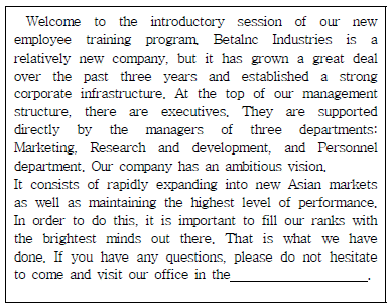
- IT department
- HR department
- Marketing department
- R&D department
(정답률: 50%)
4과목: 사무정보관리
58. 다음 중 수신 문서의 처리에 대한 설명으로 가장 적절하지 못한 것은?
- 상사에게 전달할 우편물은 공적인 것과 사적인 것으로 분류한다.
- 내용의 중요도에 따라 긴급 서신, 중요 서신, 개봉하지 않은 서신은 위에 올려놓고, 카탈로그나 홍보물은 모두 폐기한다.
- 청구서, 견적서 등 숫자나 금액이 기입되어 있는 것은 계산 착오나 기입 누락이 없는 가를 검토한 후 제출한다.
- 상사 부재 시 문서나 우편물은 폴더나 큰 봉투 속에 넣어 책상 위에 놓아둔다.
(정답률: 42%)
59. 신입사원인 박비서는 상사인 손상무의 지시에 따라 창립기념일 기념행사 초대장을 작성하고 있다. 다음 중 가장 적절하지 않은 것은?
- 시간과 장소는 별도로 '다음'란을 마련해서 적고, 장소의 위치, 교통, 약도, 주차장 유무 등에 대해서도 기록한다.
- 날짜를 표시할 때에는 가급적이면 요일도 함께 표기하고, 시간은 오전 오후를 구별하여 기입하는 것이 좋다.
- 참석여부에 대한 회답을 명확하게 하기 위해 전화보다는 반드시 반송용 엽서를 이용하여야 한다.
- 행사가 끝난 후에 모든 참가자를 대상으로 리셉션이 있을 예정이라서 이점에 대해서도 명확하게 기재한다.
(정답률: 53%)
60. 다음 중 전자우편 프로토콜에 대한 설명으로 가장 적절하지 못한 것은?
- POP3란 메일 서버에 도착한 메일을 사용자 컴퓨터로 가져올 수 있도록 메일 서버에서 제공하는 프로토콜이다.
- IMAP란 편지의 헤더 부분만 다운로드하여 본문 내용을 서버에 보관하는 전자우편 수신담당 프로토콜이다.
- MIME란 웹 브라우저가 지원하지 않는 각종 멀티미디어파일의 내용을 확인하고 실행시켜 주는 프로토콜이다.
- SMTP는 전자우편을 발송하기 전에 미리 암호화하여 전송 도중에 데이터의 유출이 발생해도 내용을 확인할 수 없도록 하는 프로토콜이다.
(정답률: 39%)
61. 다음은 어떤 용어에 대한 설명인가?
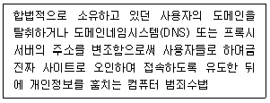
- 피싱(Phishing)
- 파밍(Pharming)
- 디도스 공격(DDoS)
- 스파이웨어(Spyware)
(정답률: 35%)
62. 박비서는 오후 4시 주가 및 환율 동향에 대하여 보고를 하라는 지시를 받았다. 다음 중 박비서의 설명 중 가장 적절하지 못한 것은?
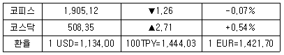
- 종합주가지수는 2.71 포인트 상승하였습니다.
- 코스피는 1.26 포인트 하락하였습니다.
- 달러 환율은 1달러에 1,134원입니다.
- 유로 환율은 1유로에 1,421.70원입니다.
(정답률: 45%)
63. 전자문서의 사용이 늘어나면서 타 기관으로 문서를 보낼 때 관인 대신 사용하는 전자적인 이미지 형태의 관인을 무엇이라고 하는가?
- 전자관인
- 전자문자
- 전자이미지서명
- 전자이미지관인
(정답률: 48%)
64. 우리기업에 근무하는 오비서는 다음 달로 예정된 신사옥준공식에 참석할 사람 500명에게 발송할 초청장과 봉투를 준비하려고 한다. 다음 중 오비서의 작업에 대한 설명 중 가장 비효율적인 것은?
- 오비서는 평소 자주 사용하는 워드프로세서 프로그램을 이용하여 초청장 초안을 작성하였다.
- 오비서는 각각의 초청장에 초청대상자의 소속회사, 직위, 이름을 기입하기 위해 메일머지 기능을 사용하였다.
- 초청장에 사용된 데이터는 상사의 주변 지인들을 정리하여 기록해 둔 데이터베이스 파일을 불러와 사용하였다.
- 오비서는 봉투작성을 위해 라벨 문서를 만들고 초청자의 주소를 타이핑하여 기입하였다.
(정답률: 42%)
65. 다음 중 문서의 순환 과정을 가장 올바르게 나타낸 것은?
- 문서작성 → 인쇄 → 보존 → 보관 → 선별 → 활용 → 폐기
- 문서작성 → 인쇄 → 보존 → 활용 → 보관 → 선별 → 폐기
- 문서작성 → 인쇄 → 보관 → 보존 → 활용 → 선별 → 폐기
- 문서작성 → 인쇄 → 보관 → 활용 → 보존 → 선별 → 폐기
(정답률: 50%)
66. 인터넷 기술을 기업 내 정보 시스템에 적용한 것으로 전자우편 시스템, 전자결재 시스템 등을 인터넷 환경으로 통합하여 사용하는 것을 무엇이라고 하는가?
- 인트라넷
- 엑스트라넷
- 원격 접속
- 그룹웨어
(정답률: 48%)
67. 다음 중 기업의 경쟁력 강화를 위하여 부서별로 분산되어 있고, 유기적으로 연결되어 있지 못한 각종 자원을 서로 연결하여 공유함으로써 자원의 효율화를 도모하고자 도입된 시스템을 무엇이라고 하는가?
- 전략정보 시스템
- 거래처리 시스템
- 정보보고 시스템
- 전사적 자원관리
(정답률: 37%)
68. 다음은 전자 우편 시스템의 기능에 대한 설명이다. 무엇에 대한 설명인지 순서대로 가장 바르게 나열된 것은?
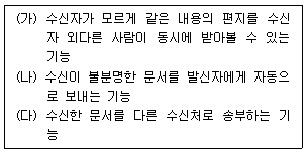
- 참조 - 스팸 처리 - 회신
- 참조 - 반송 - 전달
- 비밀 참조 - 반송 - 전달
- 비밀 참조 - 스팸 처리 - 회신
(정답률: 58%)
69. 다음은 워크샵 개최에 관한 안내문의 일부분이다. 가장 적절하지 않은 내용 표시 부분은?
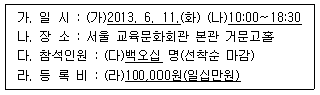
- (가)
- (나)
- (다)
- (라)
(정답률: 66%)
70. 문서 정리에 관한 설명 중 가장 옳지 않은 것은?
- 필요한 때에 필요한 문서를 신속하고 용이하게 찾게 한다.
- 문서관리에 드는 비용을 절감하게 된다.
- 정보의 가치가 없어진 문서처리로 인해 사무환경이 개선된다.
- 문서보안을 위해 문서관리체계를 담당자별로 개별화한다.
(정답률: 50%)
71. 공무원으로 일하고 있는 김비서는 매일 아침 7시에 출근하여 '집회', '시위', '대사관' 등의 키워드를 이용하여 전날 아침부터 오늘 아침까지 이 키워드와 관련된 모든 기사를 검색하는 일을 하고 있다. 그러나 다른 업무가 많아져서 이 업무는 외부기관의 도움을 받고자 한다. 이 업무를 대체할 서비스로 가장 적절한 것은?
- 월드와이드웹 서비스
- 위키 서비스
- LAN 서비스
- 클리핑 서비스
(정답률: 34%)
72. 다음 중 특정 문제 영역에 관한 전문 지식을 지식 데이터베이스에 저장하고 이를 기초로 해당 문제 영역에 관한 다양한 문제를 해결하고자 하는 시스템을 무엇이라고 하는가?
- 전략정보 시스템
- 의사결정 지원 시스템
- 인공신경망 시스템
- 전문가 시스템
(정답률: 44%)
73. 아래의 설명에 해당하는 서비스로 가장 올바른 것은?
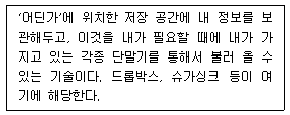
- 클라우드 서비스
- 소셜네트워크서비스
- 빅데이터
- 소셜커머스
(정답률: 62%)
74. 프리젠테이션에 대한 설명 중 가장 적절하지 못한 것은?
- 프리젠테이션 시 가급적 많은 시각자료를 활용하는 것이 중요하다.
- 숫자는 도표보다 그래프화하는 것이 효율적이다.
- 프리젠테이션을 성공하기 위해서는 청중 분석이 중요하다.
- 수신자가 같은 분야의 전문인이 아닌 경우에는 쉽게 풀어서 설명한다.
(정답률: 53%)
75. 다음 중 최비서의 사무기기 사용법이 가장 적절 하지 못한 것은?
- 전자 출판을 이용하여 간단한 인쇄물들을 컴퓨터, 고성능 레이저 프린터, 스캐너 등을 사용하여 자체 제작하였다.
- 기존의 화이트보드에 데이터의 저장, 관리, 공유기능을 가능하게 하는 디지털 회의도구인 전자칠판을 사용하였다.
- PDA와 휴대전화의 장점을 결합한 스마트폰을 이용하여 일정관리 애플리케이션을 사용하였다.
- 숫자의 계산처리가 필요한 양식문서를 만들기 위해 워드프로세서 프로그램을 사용하였다.
(정답률: 43%)
76. 다음은 봉투에 표시되어 있는 특수 우편물 표시이다. 이 중 처리방법이 달라야 하는 것은?
- private
- confidential
- personal
- registered
(정답률: 42%)
77. 다음 그래프를 통해 유추해 볼 수 있는 내용으로 가장 잘못된 것은?
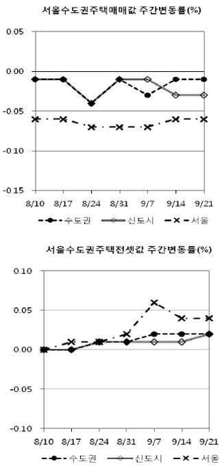
- 서울의 주택 매매값은 신도시와 수도권에 비해서 변동률이 크다.
- 서울, 신도시, 수도권의 주택 매매값은 전반적으로 하락세이다.
- 신도시는 서울에 비해서 주택 전셋값의 변동이 적은 편이다.
- 서울, 신도시, 수도권의 주택 전셋값은 전반적으로 하락했다.
(정답률: 46%)